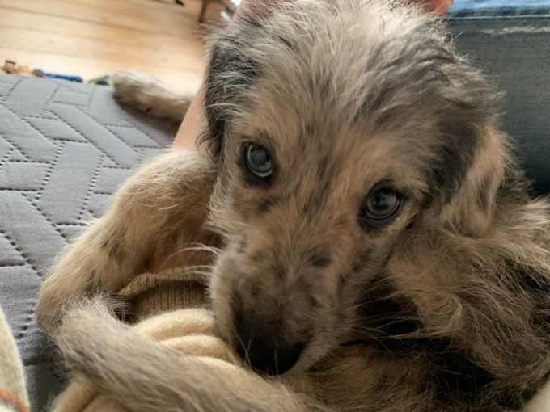
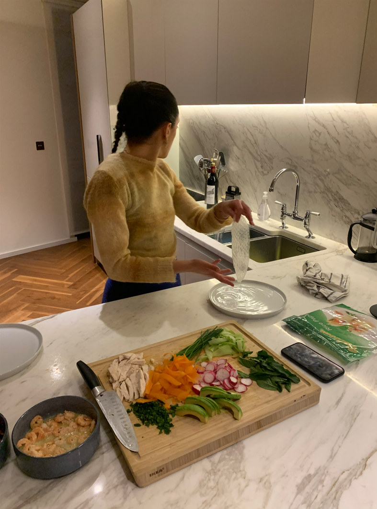
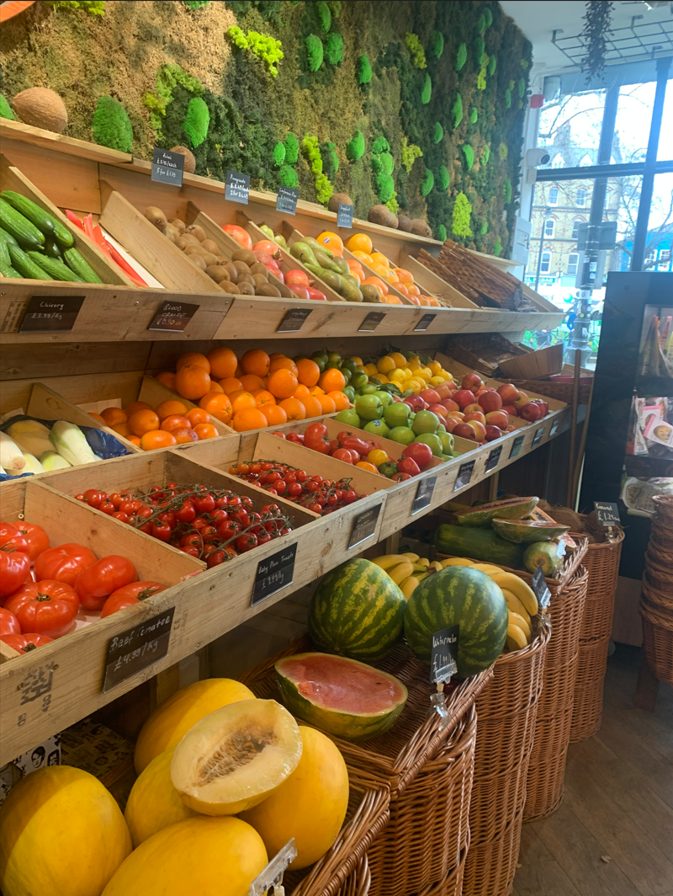

ABOUT ME
CHARLOTTE SARAH MCKENZIE DOWNIE
Hi there,
I'm Charlotte Downie, a strategy analyst at PA Consulting in London.



Hi there,
I'm Charlotte Downie, a strategy analyst at PA Consulting in London.